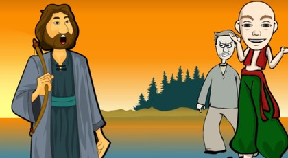

Keloğlan ile Vefasız Arkadaşı

Bir varmış, bir yokmuş, hem de Allahın kulu çokmuş, bu kullardan biri de herkesin adını sanını işittiği bizim ünlü Keloğlanmış.
Keloğlan’ın bir arkadaşı varmış. Adı Hüsemmiş.
Yedikleri içtikleri bir gidermiş. Çok samimi imişler.
Böyle imiş ama Hüsem aşırı derecede kıskanç ruhlu biriymiş. Bir gözünü diğer gözünden kıskanırmış ve çok da çekemez bir yapısı varmış…
Keloğlan o kadar masum, o kadar safmış ki, canım ciğerim diyerek sevmekte olduğu Hüsem’in bu çok çirkin huyunu bilmezmiş. Kendisi gibi bilirmiş.
Anası ile çok fakir bir hayatı varmış. Ama artık, bu hayatı çekemezmiş ..
Gurbet ellere çıkıp iş bulmakmış amacı bundan böyle. Fakat, tek başına gidemezmiş, çünkü hiç gurbete çıkmamış. Bu yüzden arkadaşı Hüsem’e açmış fikrini. O da münasip bulmuş ve beraberce çıkmaya karar vermişler.
Keloğlan anasının elini öpmüş, tam evden çıkacakken, anası, kuruş kuruş biriktirdiği bir miktar parayı, oğlunun avucuna sıkıştırmış ve iyice tembih etmiş:
“Ey benim saf oğlum, dünyalar çiçeği çocuğum. Bilirim ben seni, birlikte olduğun arkadaşına dikkat et. Herkesi kendin gibi saf ve temiz sanma. Yoksa, başın çok ağrır. Gurbete ilk defa çıkıyorsun. Ne hain ol, ne de hainliğe uğra. Hadi uğurlar ola, kara talihin açık ola. Yalnız, çok bekletme beni, gözlerimi yollarda koma emi!”
Hüsem’le köy dışında buluşan Keloğlan, azık torbaları ellerinde kara gurbet yollarına çıkmışlar. Gitmişler gitmişler, bir yere gelip oturmuşlar. Karınları da çok acıkmış. Oturup azıklarını yemişler bir güzel. “Ya bismillah” diyerek, yeniden yollara revan olmuşlar. Dağ, dere, tepe aşıp bir kasabaya girmişler. Karınları yine çok acıkmış, ama azıkları bitmiş. Hüsem, Keloğlan’ın parası olduğunu bilirmiş, kendisinin de varmış parası elbette ama, bunu O’na hiç söylememiş.
Hüsem, kendisine acındırır bir ruh haliyle, şöyle demiş: “Keloğlan gardaşlığım, yoktur beş param, varsa olsun haram. Açlıktan bir hal olduk, yolumuza yürümekten aciz kaldık. Yap bana bir iyilik. Fırından koca birer somun alalım, açlığımızı bastıralım”.
Çok yufka yürekliymiş ya Keloğlan, doğru girmiş fırına iki somun ekmek ve biraz helva alıp çıkmış. Bir çeşme başına varıp, güzelce karınlarını doyurmuşlar.
Az gitmişler, uz gitmişler, altı ay bir güz gitmişler. Karınları öyle acıkmış ki, mideleri gurul gurul edermiş. Ama, Keloğlan’ın parası tükenmiş. Arkadaşında da olmadığını sanıyormuş:
“Yahu demiş Keloğlan, kaldık beş parasız, ne olacak bizim halimiz?”O kadar aç gözlüymüş ki Hüsem, hâlâ, cebinde parası olmadığını söylemekteymiş, varsa kuşkusunu tamamen yok etmek için arkadaşının.
Karınlarına taş bağlayıp yollarına devam etmişler. Bir yokuşa yukarı çıkarken, bayılıp düşmüşler açlıktan. Bir süre öylece kalmışlar. Biraz ham erik yemişler ve tekrar yürümüşler. Büyük bir ormanlığın yanına gelmişler. Birden bire etraflarının eşkıyalar tarafından sarılması ile neye uğradıkların anlayamamışlar. Ama, Hüsem çok daha fazla korkmuş, çünkü, tüm foyası şimdi ortaya çıkacakmış. Parasını eşkıyalar alacakmış. Pos bıyıklı eşkıyanın biri, yüksek sesle emir vermiş. “Heey, Keloğlan, önce sen çıkar bakayım altınları, paraları!”
Kendinden emin bir şekilde, söylenmiş Keloğlan. “Yok param, yalansa ölsün anam, ister inan ister inanma, yalnız kötülük yapma bana!”Türkçenin Tarihi, Orhun Abideleri, Anlatım Bozuklukları, Cümlenin Öğeleri, Yazım ve Noktalama, Türkoloji Makaleleri, Edebiyat Nedir?, Alfabelerimiz, Atasözleri, Bulmacalar, Edebi Sanatlar, Sınav Soruları, Kpss, Oks, Öss, Bunları Biliyor musunuz?, Özlü Sözler, Güzel Sözler, Türkçe, Edebiyat, Masallar, Destanlar, Astroloji, Roman Özetleri
Eşkıya, hiç inanır mı?
Tutmuş kulağından, çekiştire çekiştire, “Ulan”, demiş “süt çocuğu, kel kafanı koparırım bak. Beni zorlama, çıkar dök şuraya, üstündekileri”.
Bizimki pek neşeliymiş. Nasıl olsa bir şey bulamayacaklarmış. Hiç ciddiye almazmış gibi bir eda içindeymiş. Buna sinirlenen eşkıya, kuşak altlarını, iç ceplerini, çarığının içini bile aramış Keloğlan’ın, tabii hiçbir şey bulamamış… Keyifli keyifli gülmüş Keloğlan, “Demedim mi ben size, anacığımın verdiği üç beş kuruşum vardı. Yolda bitirdim. İnanmazsanız Hüsem’e sorun”.
Haramibaşı, çirkin bir kahkaha atmış. “Yok anasının gözü, kim kimin şahidi ulan? Dazlak kafanı yüzerim ha… Peki, şimdi çok sevgili arkadaşını görelim bakalım”.
Hemen savunmaya geçmiş Keloğlan, “O zavallıyı da boşuna aramayın. Yoktur beş parası, gözlerine baksana kör talih karası”.
Hüsem, asıl şimdi çok daha perişan hale düşmüş. Bu çok sevgili arkadaşına yalancı çıkmak, haramilerin yapacağı kötülükten daha fazla üzmüş kendisini.
Buna rağmen, yalan söylemekten geri durmayan Hüsem, “Ben de Keloğlan’dan nafakalandım. Yoktur param, varsa olsun haram”.
Fakat haramibaşı, yutmamış. Çünkü, bu oğlan, hiç de Keloğlan gibi saf görünmüyormuş. Bed bed bağırmış, “Ulan” demiş “Ananın sütü daha ağzında kokuyor, bir de bize yalan söylüyorsun. Ben ararsam fena olur. En iyisi mi, dök şuraya paraları”.
Hâlâ direnirmiş Hüsem, “Arayın şu çarpık oğlanın üstünü”, diye emir vermiş Haramibaşı. Hemen aramışlar ve gömleğinin iç cebinden epey para çıkmış. Tabii yüzü gözü kıpkırmızı olmuş utancından, korkusundan. En çok, arkadaşının yalanını anlamasından, yerin dibine girmiş sanki…
Çok sinirlenen eşkıyalar, öyle bir girişmişler ki Hüsem’e, ağzı burnu kanamış. Yüzü gözü morarmış dayaktan. “Hadi defol, cehennem ol buradan”, diyerek kovmuşlar. Keloğlan, korkusundan tir tir titrermiş. Acaba, kendisini de dövecekler miymiş?
Yalvaran bir dille şöyle demiş, “Etmeyin eylemeyin, beni öldürmeyin! Bırakın gideyim yoluma, kavuşayım garip anama”.
Fakat haramibaşı, hiç de sandığı ve korktuğu gibi konuşmamış. Şöyle demiş, “Sen, çok temiz ve safsın. Yalan söylemedin bize. Biz senin gibi harbileri severiz be Keloğlan. Dünyalar Keloğlan’ın olmuş. Eşkıyaların başı, “Şimdi sana bir yer tarif edeceğim”, diye devam etmiş konuşmasına, “Bak, şu tepeyi görüyor musun; hah işte o tepeye çık, sağ tarafa bakınca, büyük bir mağara göreceksin. Mağaraya in, sağ köşesinden itibaren otuz metre kadar ileride büyük bir taş göreceksin. Üzerinde dev resmi vardır. O taşın altını kaz, altın bulacaksın”.
Eşkıyalara dünyalar dolusu teşekkür edip hemen yola çıkmış Keloğlan. Tepeye tırmanıp, zirveye ulaşmış. Şöyle bir bakınmış, söylenen mağaraya doğru gitmiş. Kısacası üzerinde dev resmi bulunan taşın yanına varmış. Etrafına bakınmış, kimseler yokmuş. Sivri bir taşla taşın altını oymaya başlamış. Çok fazla yorulmadan bir testi altın bulmuş.
“Şükür şükür, buldum altını, mutlu edecem anamı, doğruluğumun gördüm ödülünü” diye diye yürümüş gitmiş. Türküler söyleye söyleye evine doğru gelirken anası onu görmüş. “Acaba niye erken döndü” diye geçirmiş içinden. Keloğlan, çil çil altınları annesinin gözleri önünde dökmüş. Kadıncağız o kadar sevinmiş ki düşüp bayılmış.
Biz, bakalım Hüsem’in maceralarına. Hüsem, nice memleketleri dolaşmış, işe girmiş, işten çıkmış, ama bir türlü para biriktirememiş.
Gurbetlerden dönmüş köyüne. Köyün girişinde kulaklarına davul zurna sesleri gelmiş. Seslerin geldiği yöne doğru bakmış. Bir kocaman konak ve önünde büyük bir kalabalık varmış. Hızlı hızlı o kalabalığın bulunduğu yere doğru yürümüş. Bir de ne görsün. Keloğlan’ın eski evinin yerinde kocaman bir konak. Şaşkınlıktan deliye dönmüş. Bu olacak iş miymiş? Acaba rüya mı görmekteymiş?
Varmış, birine şöyle sormuş, “Ne var bugün burada, bu kalabalık neyin nesi?”
Adam, “Koğlan, köyün fakir ailelerinin çocuklarını sünnet ettiriyor” demiş. Bu duyduğu haber karşısında, tuz yemiş keçiler gibi yalanmaya başlamış, inanamamış. Kıskançlık damarları kabarmış ve yine sormaya devam etmiş. “Yahu” demiş, “Hadi bu şöleni anladık diyelim, peki şu konak da neyin nesi? Benim bildiğim burada zavallı bizim Keloğlan’ın fakir anası ile oturduğu kötü bir ev vardı. Yanılıyor muyum yoksa?”
Adam, “Yoo”, demiş, “hiç de yanılmıyorsun”.
Hayret dolu bakışları, adamın da şaşkınlaşmasına sebep olmuş ve sürdürmüş konuşmasını adam, “Gördüğün gibi konak üç katlı. Bir katında anası ile kendisi oturuyor Keloğlan Bey’in. Öteki katta ise köyün hocası oturuyor. Hem de burada çocuklara ders veriyor. Üçüncü kat ise, misafirhane. Köyümüze gelen yabancılar, burada kalıyorlar. Bitmedi demiş adam, daha bitmedi. Az aşağıda yeni bir bina daha yaptırıyor. Orayı da yetim ve sahipsiz hastalara ayıracak. Senin anlayacağın Keloğlan, artık hepimizin beyi, hepimizin babası oldu”.
Hüsem’in kıskançlık damarları çatlamış ve düşüp bayılmış. Herkes koşarak Hüsem’in olduğu yere gelmiş. Tabii, Keloğlan da gelmiş ama arkadaşını tanıyamamış. Neden mi? Çünkü, çok zayıflamış, adeta iskeleti çıkmış. Üzerine su dökerek Hüsem’i ayıltmışlar. Fakat, sağ tarafına felç vurduğu için yerinden kalkamamış. Kimse sahip çıkmamış Hüsem’e.
Keloğlan, “Konağın bir odası boş, oraya götürün” demiş, “Bakarız çaresine”.
Kısa zamanda özürlüler evinin inşaatı bitince, Hüsem oranın ilk sakini olmuş. Bu arada epey düzelmiş Hüsem, sadece sağ kolu tutmazmış. Keloğlan’ın eline düşmekten dolayı gururu incinmiş ama, ekmek elden su gölden kabilinden böyle rahat bir ortamı da terk etmek istememiş. O nedenle, kendisinin tanınmaması için, her şeyi yapmış. Bir yabancı rolü oynamış. Fakat, kendisinin cıs cıbır olup da, daha düne kadar fakir biri olan bu arkadaşının, böyle servete kavuşmasını bir türlü hazmedemiyormuş. Hep bir hainlik düşünürmüş.
Keloğlan görkemli bir düğün yaparak çok ünlü bir beyin kızıyla evlenmiş. İsmi Gülşah olan bu hanıma, özürlüler Gül abla derlermiş. Çünkü, bir anne gibi onları ziyaret eder, hallerini hatırlarını sorar, ihtiyaçlarını karşılarmış. Hüsem, Keloğlan’a karşı artık ciddi bir düşmanlık beslemeye başlamış. Kendisinin bir çulu bile yokmuş ama, arkadaşı hem zengin olmuş, hem de güzel bir kızla evlenmiş. Bunları düşündükçe erim erim erirmiş. Mutlaka, bir kötülük yapmak için, fırsat kollarmış.
Günün birinde Gülşah, özürlüleri ziyarete gelmiş. Her birine güzel hediyeler vermiş, nasıl olduklarını sormuş, morallerini tazelemiş. Tam kapıdan çıkacakken, ayağı kayıp yere düşmüş ve ayağı kırılmış. Keloğlan bu olaya çok üzülmüş, hanımı ile birlikte yatakta yatmış. O kadar çok severmiş ki Gülşahı’nı. Yine böyle bir gecenin birinde, karısının inlemeleri sırasında, canı çok sıkılmış ve öteki odaya geçmiş. Tam bu sırada, nur yüzlü ihtiyar bir zat durmuş karşısına. Ağır ağır şunları söylemiş: “Hey merhamet abidesi Keloğlan, eski bir arkadaşın hanımına bu kötülüğü yapan”.
Böyle demiş ve kaybolmuş nur yüzlü adam. Keloğlan’ı almış bir düşünce. Kim olabilirmiş bu eski arkadaşı? Gece düşünmüş, gündüz düşünmüş, işin içinden çıkamamış. Oğlunun bu kadar düşünceli olmasından ciddi derecede rahatsız olan anası, şöyle demiş: “Ah benim fakirken zengin olan oğlum, ah benim kendisi saf, talihi ak oğlum, hanımının düşmesine sebep olan, senin eski arkadaşın Hüsem olsa gerek”.
Keloğlan, bu söze gülmüş, “A benim tatlı anacığım, Hüsem, şimdi kim bilir nerelerdedir. Benimle birlikte gitti ve bir daha dönmedi.
Anası ısrar etmiş, “Yok oğlum yok” demiş, “Sen hele şu hastaların özürlülerin aslını, esas adlarını, kim olduklarını bir araştır. O zaman gerçeği göreceksin”.
Fakat Keloğlan’ın aklı hâlâ bunu almazmış. Ama, anasının dediğini yapmayı kafasına koymuş, gitmiş özürlülerin bulunduğu binaya.
Gururuyla oynamadan tümünü sorguya çekmiş bey olarak. Sıra gelmiş Hüsem’e.
Hüsem her ne kadar rol yaptıysa bile, Keloğlan tanımış. Ama, hiçbir şey dememiş bu konuyla ilgili olarak. Önce gerçekten emin olmak için Hüsem’e sormuş:
“Senin adın ne?”
“Cemal”, demiş Hüsem.
Kafasını kaşımış Keloğlan:
“Bir yanlışın yok değil mi?” demiş tekrar. “Yoo”, diye cevaplamış Hüsem, “Cemal’im ben”.
“Peki nereden geldin buraya, o sünnet şöleni günü, ne işin vardı buralarda?” diyerek iyice işin aslını öğrenmek istemiş. Sesine bir gariplik vererek konuşmuş Hüsem, “Ben bir garibim. Kimim kimsem kalmadı dünyada. Memleketimde iftiraya uğradım. Canımı zor kurtardım. Böyle diyar diyar dolaşıp dururken, sizin köyünüze uğradım. Gerisini biliyorsunuz.
Sinirlenmiş Keloğlan, o kolay kolay sinirlenmeyen Keloğlan. “Peki” demiş “Sen o gün Gülşah’ı düşerken gördün mü?”.
“Tövbe tövbeeel Yine iftiraya uğrayacağım galiba!” diye söylenmiş Hüsem. Bu konuşmaları başından beri dinleyen bir özürlü, dayanamamış, “Beyim demiş, “Beyim bu genç bal gibi yalan söylüyor. Nereden mi bilmekteyim? Gülşah abla, buraya her gelişinde bu gence bir şeyler oluyor. Devamlı takip ediyor. Geçen gelişinde de takip etti ve tam kapıdan çıkarken elindeki sabunu geçeceği yere koydu. Gülşah Abla da düştü ve ayağı kırıldı. Hem gerçek adının Hüsem olduğunu, burada birine söylemiş. Bu huysuz ve hain oğlan baştan ayağa yalancı beyim…”
Keloğlan’ın aklı karışmış.
Bu ihaneti, kendisine nasıl yaparmış? Bir türlü içine sindirememiş. Buna artık dayanma gücü kalmayan Keloğlan, Hüsem’i kovmuş …
Hüsem, utancından köyünde de duramamış ve almış başını gitmiş. O gün bu gündür hala nerede olduğunu bilen yokmuş.